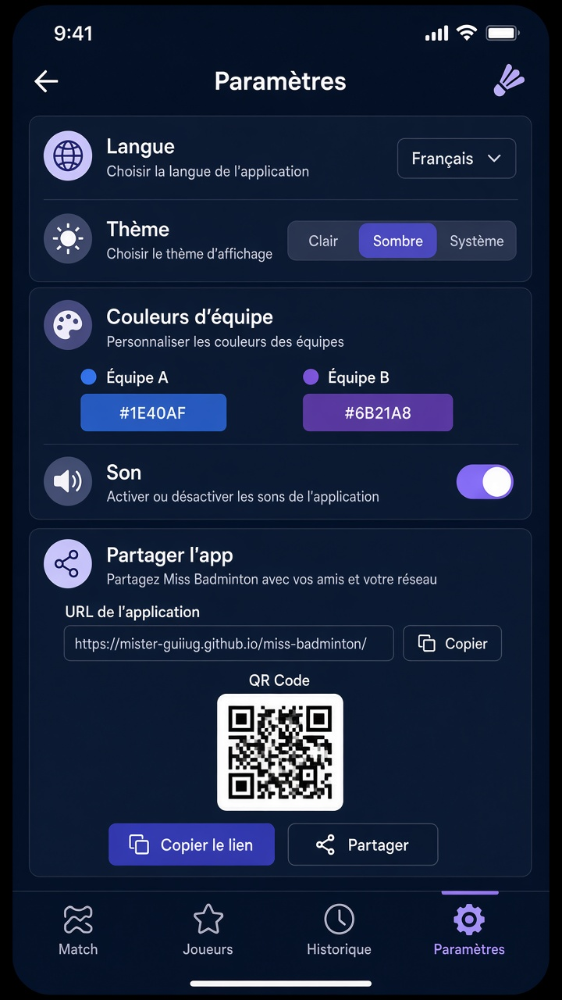
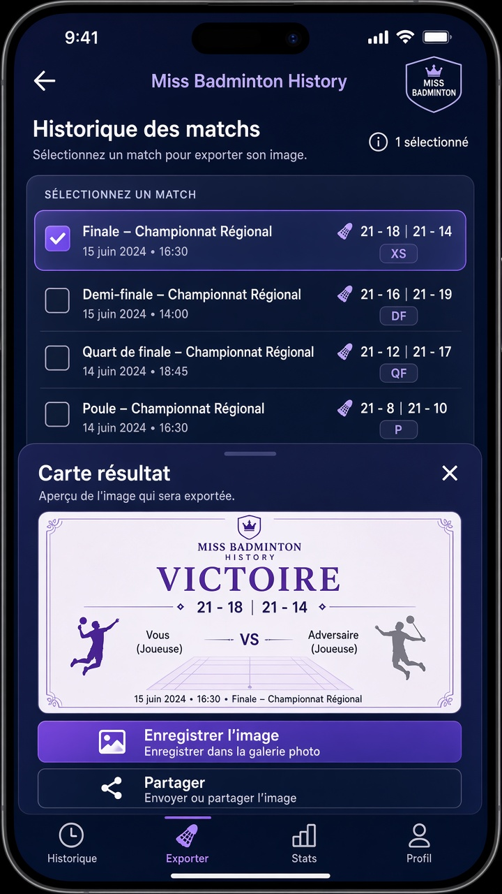
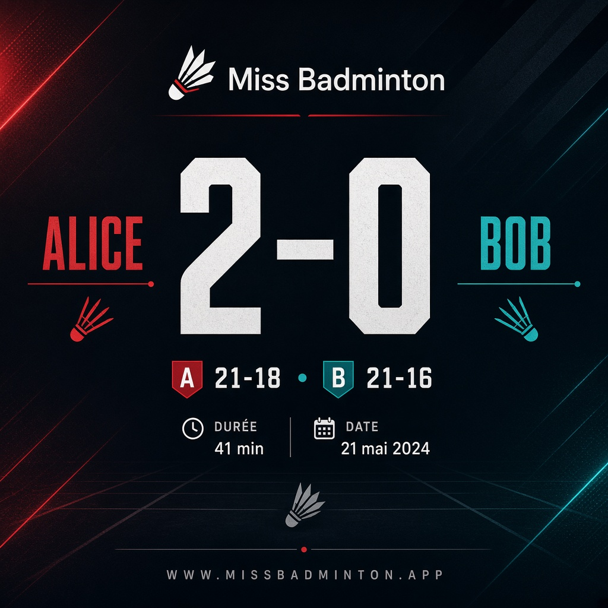
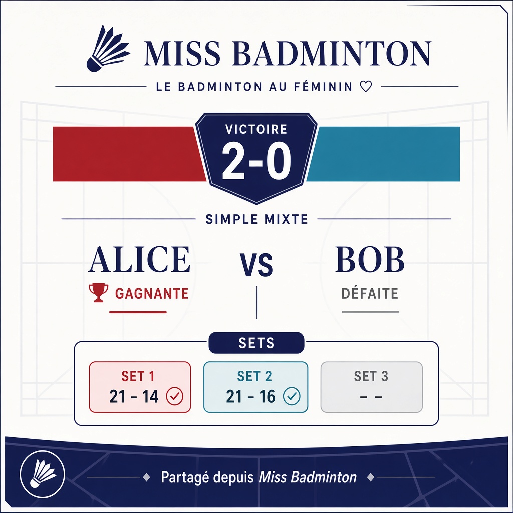
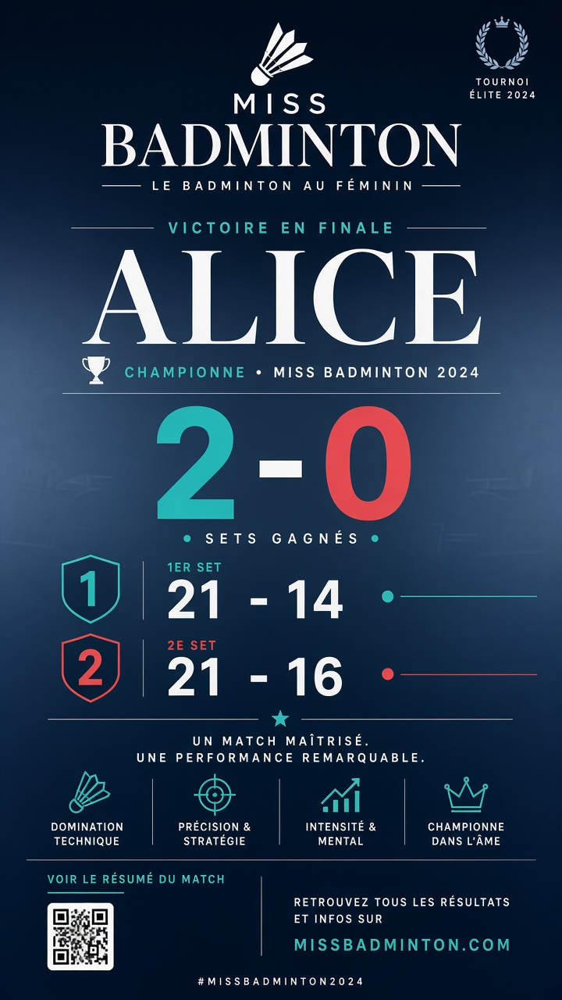

Paramètres — Section « Partager l’app » : URL
canonique, bouton copier, QR grand format, partage natif. Consentement
audience et mises à jour restent. FamilyApps / FamilyLinks inchangés.

Paramètres — Partager l’app
Lien + QR + actions Copier / Partager. Plus de bloc Données ni
Diagnostics.

Historique — sélection & feuille
Un match sélectionné, prévisualisation de la carte, Enregistrer /
Partager. Entrée aussi depuis la fin de match.

A · Broadcast (carré)
Score dominant, sets en bas, marque discrète. Idéal messagerie.

B · Club clair (carré)
Fond clair, pastilles de sets, look club / affiche.

C · Story 9:16
Format vertical ; vainqueur mis en avant + QR optionnel.